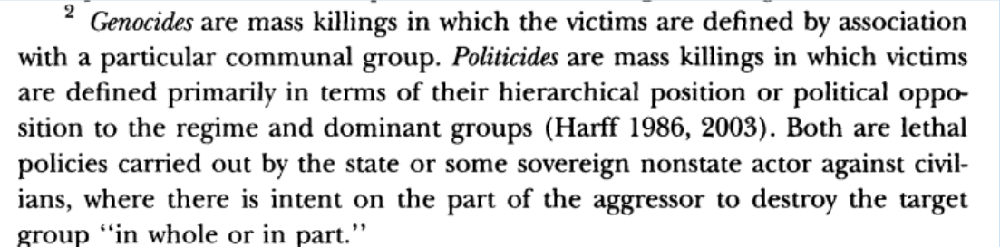

IV. What is the Future of Transnational Politics and IR?
Justin Leinaweaver (Fall 2026)
What do we learn about human rights violations in the world today?
Most common “human rights” violations?
Who specifically in the country is doing the harms?
How are victims being targeted?

“Increases in human rights ‘naming and shaming’ activity against perpetrators of an ongoing genocide or politicide by actors within transnational advocacy networks should reduce the severity of genocide or politicide” (577).
Diagram the Model
Who are the key Interests?
What are the key Institutions?
What are the key Interactions?
Interests
Institutions
Interactions, e.g. Naming and Shaming (N&S):
Interests
Institutions
Interactions, e.g. Naming and Shaming (N&S):
Krain (2012) on naming and shaming “bad” states